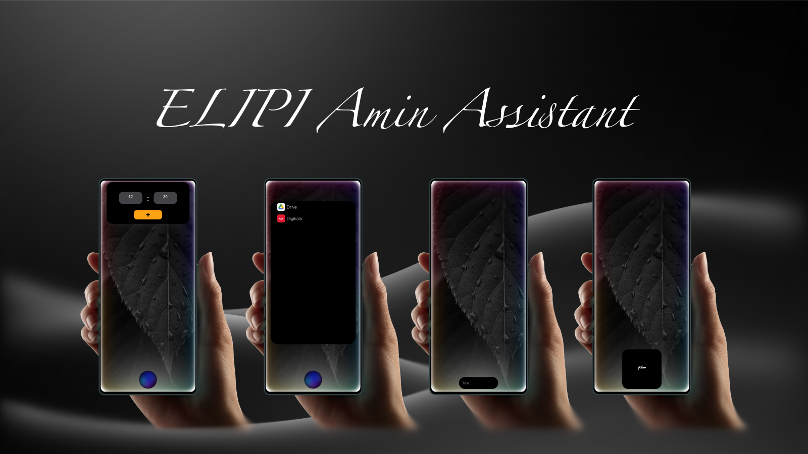

در دنیای دیجیتال امروز، تعامل انسان و فناوری به سطحی فراتر از لمس صفحات نمایش و تایپ دستورات رسیده است. Amin Assistant با بهرهگیری از تکنولوژی پردازش گفتار و درک پیشرفتهی زبان طبیعی، تجربهای هوشمند، سریع و منحصربهفرد را برای کاربران فارسیزبان فراهم میکند. این دستیار دیجیتال، فراتر از یک ابزار ساده، همراهی هوشمند برای انجام کارهای روزمره، افزایش بهرهوری و تسهیل تعامل با دستگاههای هوشمند است.
پردازش گفتار و تشخیص صوت هوشمند
Amin Assistant با استفاده از الگوریتمهای پیشرفتهی پردازش صوت، دستورات شما را با دقتی بالا و در کمترین زمان ممکن دریافت و اجرا میکند. فرقی ندارد که در محیطی پرسر و صدا باشید یا در حال حرکت، این دستیار صوتی با بهرهگیری از فناوری حذف نویز و تشخیص گفتار، بهترین تجربهی تعامل را ارائه میدهد.
پشتیبانی کامل از زبان فارسی
درحالیکه بسیاری از دستیارهای دیجیتال جهانی تمرکز کمتری بر روی زبانهای غیرانگلیسی دارند، Amin Assistant با درک دقیق زبان فارسی و شناخت تفاوتهای گویشی، ارتباطی طبیعی و روان را برای کاربران فراهم کرده است.
تعامل مکالمهای هوشمند
برخلاف دستیارهای سنتی که صرفاً به یک فرمان پاسخ میدهند، Amin Assistant میتواند مکالمهای پویا و تعاملی را با شما برقرار کند.
اجرای وظایف تنها با یک فرمان صوتی
Amin Assistant به شما این امکان را میدهد که بدون نیاز به لمس گوشی، تنها با یک فرمان صوتی، کارهای مختلفی را انجام دهید:
عملکرد سریع، حتی بدون اینترنت
برخلاف بسیاری از دستیارهای صوتی که به اتصال دائمی به اینترنت نیاز دارند، Amin Assistant بخش زیادی از وظایف خود را بهصورت آفلاین اجرا میکند.
امنیت و حریم خصوصی در اولویت است
ما در توسعهی Amin Assistant از جدیدترین پروتکلهای امنیتی استفاده کردهایم تا اطمینان حاصل کنیم که اطلاعات کاربران در محیطی ایمن پردازش و نگهداری میشود.